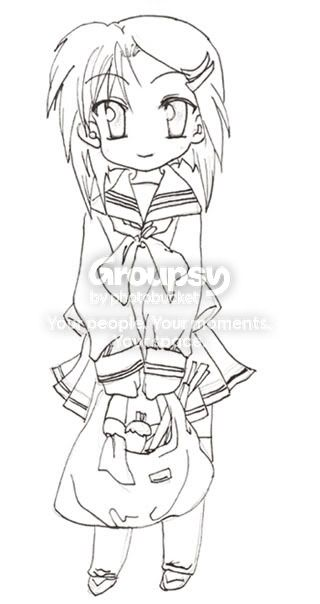

ขอบคุงจ้า จะเอาไปปรับปรุงงุงิ
เฮย!! นี่ต่ำไปเหรอคะ....
มาแลกกันเถอะ!!! TTATT เราชอบวาดคิ้วสูง(เกิน)อ่า....
http://eco.froztic.in.th/archive/ecofanclub/
http://eco.froztic.in.th/archive/ecofanclub/viewtopic.php?f=21&t=1294
Ariesnoah เขียน:ก็ไม่ต่ำไปนิกำลังดีแล้ว วาดรูปการ์ตูนไม่มีคำว่าผิด เพราะมันคือการ์ตูน (แต่จะรับได้รึเปล่าหนูไม่รู้น้า)
laonoi เขียน:^
^
ชอบมืออ่ะ วาดสวยจัง><~
เราว่าถ้าได้ลงสีใน photoshop ต้องออกมาดีกว่านี้แน่ๆค่ะ คือสีมันยังดูมืดๆไปยังไงมะรุ แล้วมันยังดูไม่คมอ่ะ แต่โดยรวมแล้วเราว่าสวยแล้วนะ ลองหา photoshop มาทำนะคะ อยากเห็นๆ
FumaShin เขียน:วิจารณ์รูปในซิกให้ผมหน่อยจิคับ เพิ่งฝึก cg
ผมว่าสีมันดูชืดๆไงไม่รู้ :? วาดในเพนท์เอา ไม่มีเครื่องแกน
ช่วยแนะนำหน่อยนะคับ ขอบใจงับ ^-^a
FumaShin เขียน:laonoi เขียน:^
^
ชอบมืออ่ะ วาดสวยจัง><~
เราว่าถ้าได้ลงสีใน photoshop ต้องออกมาดีกว่านี้แน่ๆค่ะ คือสีมันยังดูมืดๆไปยังไงมะรุ แล้วมันยังดูไม่คมอ่ะ แต่โดยรวมแล้วเราว่าสวยแล้วนะ ลองหา photoshop มาทำนะคะ อยากเห็นๆ
= =a เอ่อ...คือผมลงสีใน photoshop อ่ะคับ
แต่ลายเส้นผมวาดในเพ้นเอา แล้วมาเติมส่วนประกอบเอาใน photoshop อีกทีอ่ะ
ไม่รู้ว่าเพราะวาดในคอมรึปล่าวลายเส้นมันเลยหนาๆ หรือว่ามีวิธียังไงทำให้เส้นคมขึ้น
ช่วยแนะนำหน่อยนะงับ =3=
FumaShin เขียน:laonoi เขียน:^
^
ชอบมืออ่ะ วาดสวยจัง><~
เราว่าถ้าได้ลงสีใน photoshop ต้องออกมาดีกว่านี้แน่ๆค่ะ คือสีมันยังดูมืดๆไปยังไงมะรุ แล้วมันยังดูไม่คมอ่ะ แต่โดยรวมแล้วเราว่าสวยแล้วนะ ลองหา photoshop มาทำนะคะ อยากเห็นๆ
= =a เอ่อ...คือผมลงสีใน photoshop อ่ะคับ
แต่ลายเส้นผมวาดในเพ้นเอา แล้วมาเติมส่วนประกอบเอาใน photoshop อีกทีอ่ะ
ไม่รู้ว่าเพราะวาดในคอมรึปล่าวลายเส้นมันเลยหนาๆ หรือว่ามีวิธียังไงทำให้เส้นคมขึ้น
ช่วยแนะนำหน่อยนะงับ =3=
